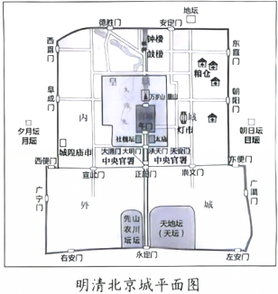
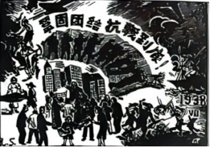
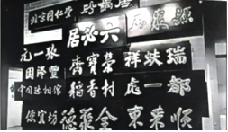

2025年北京市西城区中考历史试卷 · 选择题 第6、7、8、9、10题 · 对应解析
6．（1.5分）2024年7月，第46届世界遗产大会通过决议，将“北京中轴线——中国理想都城秩序的杰作”列入《世界遗产名录》。中国世界遗产总数达59项。结合“明清北京城平面图”找出下列属于“北京中轴线”遗产构成要素的建筑（ ）
①永定门
②西直门
③故宫
④钟鼓楼

A．①②③B．①②④C．①③④D．②③④
【答案】C
【分析】本题考查北京紫禁城，掌握相关的基础知识。
【解答】据图片看出，永定门、故宫、钟鼓楼都在北京的中轴线上。①③④正确，故C符合题意；西直门位于北京西北部，不在北京的中轴线上，②错误，排除ABD。
故选：C。
7．（1.5分）某班同学要制作中国人民近代反侵略斗争主题展板，已经收集了左宗棠收复新疆、台湾军民抗日武装斗争等内容，在这个展板中还可以使用的内容有（ ）
①林则徐虎门销烟
②太平天国运动
③邓世昌英勇抗敌
④“黄花岗起义”
A．①②③B．①②④C．①③④D．②③④
【答案】A
【分析】考查中国近代史上反侵略斗争的重要事件。
【解答】根据所学可知，林则徐虎门销烟显示了中华民族反抗外来侵略的坚强意志；太平天国运动沉重的打击了清朝的统治和外国侵略势力，谱写了中国近代史上壮烈的一章；邓世昌是甲午中日战争中北洋水师的重要将领，在黄海海战中英勇牺牲，是中国人民反侵略斗争的英雄人物，因此①②③可以使用，A项正确；④“黄花岗起义”是1911年孙中山领导的资产阶级革命运动，目的是推翻清朝，建立民主共和国，属于反封建、反专制的苗金斗争，不属于反侵略斗争，④不可以使用，排除BCD项。
故选：A。
8．（1.5分）有学者说：“民国的建立并没有带来和平、秩序和统一……采取共和体制而带来的政治面貌，并不足以革新国家；还需要有一些更基本的东西来唤醒国家及人民。”在民国初期，体现出“唤醒国家及人民”的是（ ）
①新文化运动
②五四运动
③南京国民政府成立
④东北易帜
A．①②B．①④C．②③D．③④
【答案】A
【分析】本题主要考查民国初期的思想解放运动，要求运用所学分析解读题干信息。
【解答】新文化运动是一场思想文化革新运动，它提倡民主与科学，反对专制和愚昧、迷信；提倡新道德，反对旧道德；提倡新文学，反对旧文学。新文化运动极大地冲击了封建思想的统治地位，使中国人民接受了一次民主与科学的洗礼，为马克思主义在中国的传播创造了有利条件，起到了“唤醒国家及人民”的作用，①正确；五四运动是一场以先进青年知识分子为先锋、广大人民群众参加的彻底反帝反封建的伟大爱国革命运动，是一场中国人民为拯救民族危亡、捍卫民族尊严、凝聚民族力量而掀起的伟大社会革命运动，是一场传播新思想新文化新知识的伟大思想启蒙运动和新文化运动，它推动了中国社会进步，促进了马克思主义在中国的传播，促进了马克思主义同中国工人运动的结合，为中国共产党成立做了思想上干部上的准备，体现了“唤醒国家及人民”，②正确，A项符合题意。南京国民政府成立代表着大地主大资产阶级的利益，它的成立并没有从根本上“唤醒国家及人民”，③错误；东北易帜标志着南京国民政府在形式上基本统一了全国，主要是在政治统一方面有意义，并非“唤醒国家及人民”，④错误，排除BCD项。
故选：A。
9．（1.5分）如图版画体现了历史上某一时期中国共产党主张，在这一主张下（ ）

A．与中国国民党合作开展了大革命
B．召开了遵义会议挽救了中国革命
C．抗日战争已经成为了全民族抗战
D．毛泽东赴重庆谈判争取和平建国
【答案】C
【分析】本题考查全民族坚持抗战，掌握相关的基础知识。
【解答】据图片信息“巩固团结，抗战到底”“1938”并结合所学可知，1937年9月，国民党中央通讯社公开发表了中共中央提交的国共合作宣言，蒋介石也发表谈话，实际上承认了中国共产党的合法地位。这样，以国共合作为主体的抗日民族统一战线正式建立，国共团结御侮、全民族抗战的局面开始形成。故C符合题意；与中国国民党合作开展大革命是1924﹣1927年，排除A；召开遵义会议挽救了中国革命是1935年，排除B；毛泽东赴重庆谈判争取和平建国是1945年，排除D。
故选：C。
10．（1.5分）如图中展示了众多北京老字号招牌。其中“北京同仁堂、全聚德、张一元”等老字号，均在某一历史时期由私营企业转变为国营企业。这是因为（ ）

A．土地改革的顺利推进
B．社会主义改造的完成
C．一五计划推动工业发展
D．人民代表大会制度确立
【答案】B
【分析】本题考查了三大改造，要求学生阅读史料并结合所学作出回答。
【解答】A.土地改革是变地主土地所有制为农民土地所有制，针对农业，与私营企业变国营无关，错误。
B.社会主义改造中对资本主义工商业采取公私合营等方式，将私营企业转为国营，符合题意，正确。
C.一五计划重点是发展重工业，主要推动工业建设，不涉及私营企业性质转变，错误。
D.人民代表大会制度是政治制度，确立的是国家权力机关，与企业性质变化无关，错误。
故选：B。